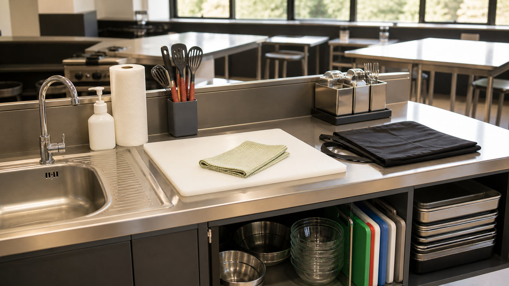

Read and watch
Clear theory, purposeful visuals and one controlled video for each named section.
Stage 4 elective · Food Technology 7–10 Syllabus (2025) candidate
Build safe kitchen confidence, understand food choices and science, then design, produce and evaluate a purposeful party food solution.

Each module uses the same evidence-building sequence.
Clear theory, purposeful visuals and one controlled video for each named section.
Immediate feedback returns you to the exact idea that needs another look.
Use Read → Select → Explain → Check to build a strong folio response.
Use a lesson from start to finish, or open the whole-course banks when you need revision, a catch-up path or the Party Task workspace.
One purposeful clip and one equivalent no-video pathway for every theory section.
Open video learningConcept-linked practice with immediate feedback, printing and device-local progress.
Open the activity bankBuild, back up, restore, print and export a working folio without claiming online submission.
Open my folioThe sequence follows the teacher-posted 20-week program and builds from kitchen readiness to a purposeful Party Task evidence pathway.
Hygiene, hazards, cleaning and safe routines.
Open moduleLanguage, tools, techniques and scaling.
Open moduleContamination, temperature, storage and allergens.
Open moduleNutrients, food groups and informed choices.
Open moduleCooking changes, functional properties and fair tests.
Open moduleSenses, precise descriptors and evidence-based improvement.
Open moduleProduction, supply, security, waste and sustainability.
Open moduleUser needs, costing, constraints and design criteria.
Open moduleWorkflow, collaboration, production and presentation.
Open moduleTesting, evidence, reflection and improvement.
Open module